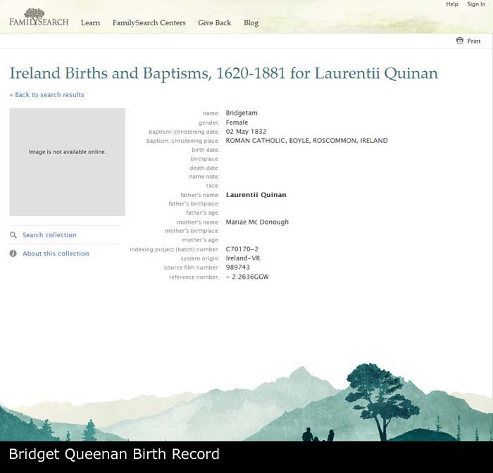
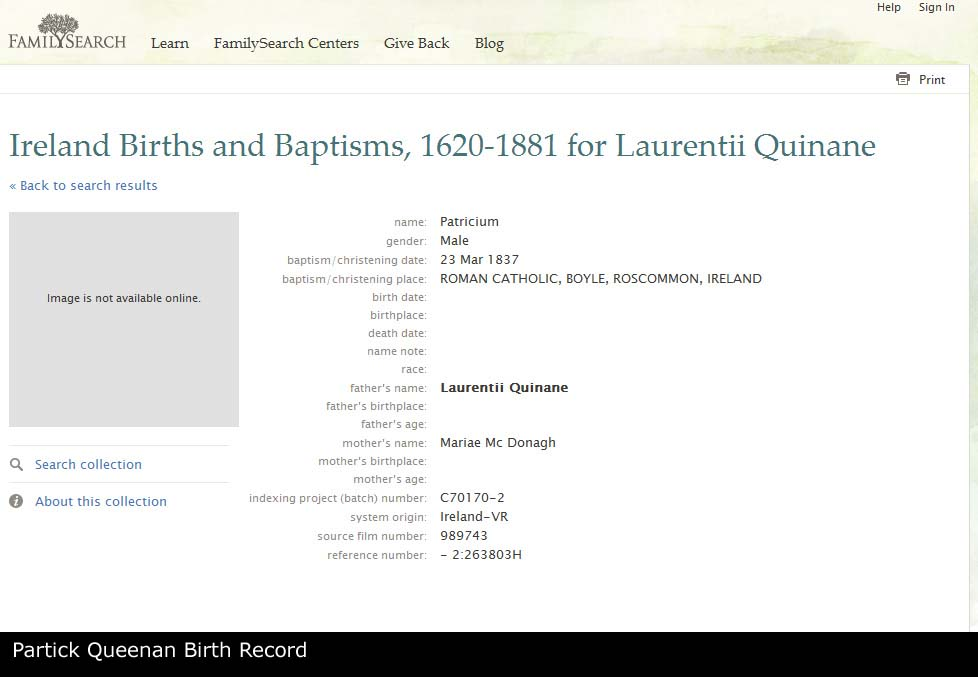

Laurence QUEENAN d. Before 1852
Laurence QUEENAN d. Before 1852 - Overview
- Overview
- Chronology
- Family As A Child
- Family As A Spouse
- Pedigree
- Descendants Chart
- Gallery
| Name | Full Name | Laurence QUEENAN |
| Forename | Laurence | |
| Surname | QUEENAN | |
| Sex | Male | |
| Death | Before 1852 | |
| Spouse | Maria MCDONOUGH [Family] | |
| Children | 1. Mary QUEENAN b. 02/1830 d. After 1901 2. Bridget QUEENAN b. 04/1832 3. Patrick QUEENAN b. 03/1837 4. Michael QUEENAN b. 08/1840 | |
| Change Date | Date | 14/04/2011 |
| Time | 21:35 | |
Laurence QUEENAN. Laurence died before 1852. He was a Labourer in 1852. 2 sons and 2 daughters listed. |
Children
| i | Mary QUEENAN1 was born in 02/1830 in Boyle, Roscommon, Ireland. She died after 1901 aged about 71. Mary resided in 1830 in Boyle, Roscommon, Ireland. She was baptized on 04/03/1830 in Boyle, Roscommon, Ireland. She was a in 1851 in 73 Carver Street, Ecclesall Bierlow, Sheffield, England. In 1851 Mary resided in 73 Carver Street, Ecclesall Bierlow, Sheffield, England. In 1852 she resided in Orchard Street, Norton, Sheffield, England. In 1861 she resided in 76 Brown Street, Sheffield, Yorkshire, England. Mary resided in 1866 in 77 Brown Street, Sheffield, Yorkshire, England. In 1871 she resided in 66 Brown Street, Sheffield, Yorkshire, England. In 1881 she resided in 78 Brown Street, Sheffield, Yorkshire, England. In 1891 she was a Domestic Servant in 23 Flora Street, Nether Hallam, Sheffield, England. Mary resided in 1891 in 23 Flora Street, Nether Hallam, Sheffield, England. In 1901 she resided in St Elizabeths Home For Aged Poor, Heeley, Sheffield, England. |  | ||
| ii | Bridget QUEENAN was born in 04/1832 in Boyle, Roscommon, Ireland. Bridget was baptized on 02/05/1832 in Boyle, Roscommon, Ireland. |  | ||
| iii | Patrick QUEENAN was born in 03/1837 in Boyle, Roscommon, Ireland. Patrick was baptized on 23/03/1837 in Boyle, Roscommon, Ireland. |  | ||
| iv | Michael QUEENAN was born in 08/1840 in Boyle, Roscommon, Ireland. He was baptized on 21/08/1840 in Boyle, Roscommon, Ireland. |
Notes
1. Mary was born in 1830 in Boyle of parents Laurence Queenan/Quinan and Maria/Mary McDonough. We assume she left Ireland on account of the famine. We cannot currently trace the whereabouts of the rest of her family so it is unsure of whether she travelled to England alone of not. We do know that she was working as a servant in Sheffield by 1851 at the age of 20. She married John Reddican the next year, also from Ireland and by this time her father Laurence has certainly died. Mary lived and worked around the Brown Street neighbourhood and it appears she never learnt to read or write as she signed birth certs with an X. By the age of 40 she was a widow and worked as a servant while living with her daughter Winifred. Her other children all stayed around Sheffield city centre in various homes and employments. She MAY have ended up in a home, St Elizabeth's Home for Aged Poor, Heeley, Sheffield by 1901 at which point we lose trace of her.; [Note Record]
Web page generated using a registered copy of GedScape software, licensed by Mark Watkin